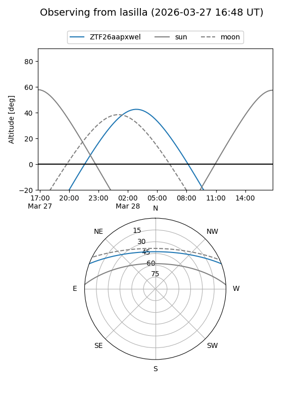
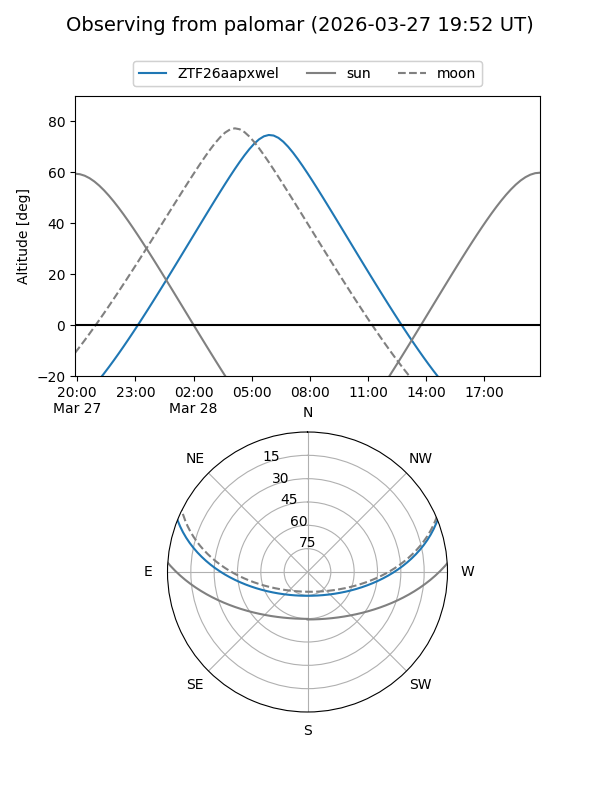

ZTF26aapxwel
Target ZTF26aapxwel at 2026-03-28 08:28
Aliases and brokers:
FINK: link
Lasair: link
ALeRCE: link
alt names
ZTF26aapxwel (ztf,fink_ztf)
Coordinates:
equatorial (ra, dec) = 157.4439,+18.19176
equatorial (HMS+DMS) = 10:29:46.53,+18:11:30.33
galactic (l, b) = (220.7086,+56.24464)
Flags:
Photometry:
last ztfg=19.87
1 ztfg detections
Lightcurve
Visibility


Additional plots